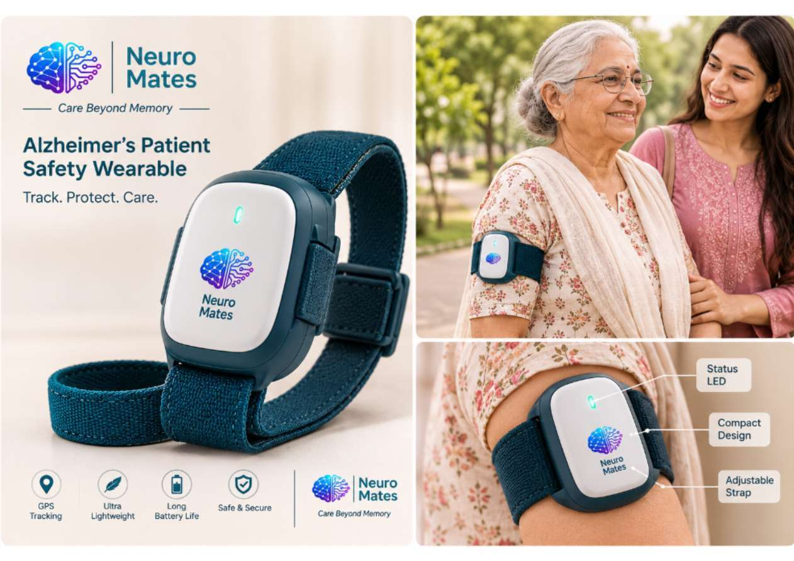
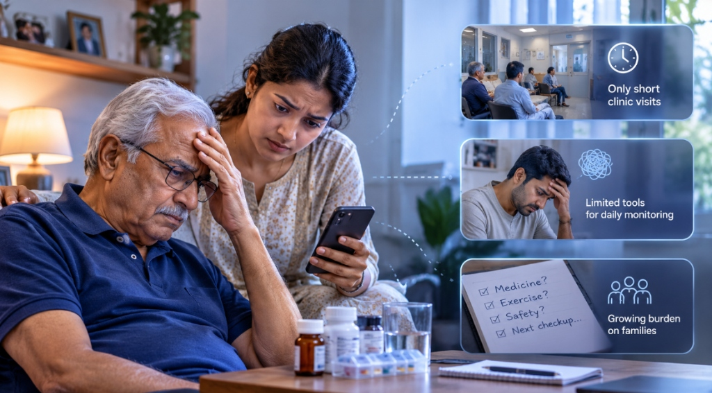

Advancing connected care for neurological health.
Neuro Mates was founded to address the daily challenges faced by patients, families and healthcare providers living with neurological conditions.



The challenge
Neurological conditions require continuous attention, yet most care happens during short clinic visits. Families often bear the burden of monitoring with limited tools.

Our solution
Neuro Mates bridges this gap by combining wearable sensing, IoT connectivity and an intelligent platform to make monitoring continuous, accessible and collaborative.
How the care ecosystem connects.
A collaborative relationship uniting Patient, Caretaker, Doctor, and Admin around the central Neuro Mates Care Platform.
Guided by medical professionals
Neuro Mates is developed in ongoing consultation with experienced medical specialists to ensure scientific grounding, clinical relevance and responsible innovation.
Four focused care areas
Disease-specific technology designed around the unique demands of each neurological condition.
Continuous movement and tremor monitoring, fall alerts, and guided motor rehabilitation activities.
Continuous location tracking, 1 km safe-zone geofence alerts, daily routine reminders and cognitive memory quizzes.
Continuous brain-activity monitoring for abnormal EEG signals that may indicate a seizure, with emergency caregiver alerts.
Muscle-signal sensors and facial-expression input powering interactive, game-based motor rehabilitation.